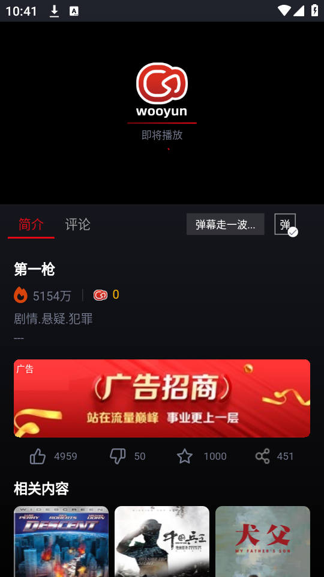

第一次用 wooyun 追剧？五分钟从下载到爽看的超详细带路
把 wooyun 比作口袋里的万能遥控器——一台手机搞定电影、剧、动漫、综艺、短剧、纪录片。这篇从零带你上手，不需要任何基础，看完就能直接开追。
这篇能带你从完全不懂 wooyun 到用起来，不需要任何基础。我会用邻座高手的语气，一步一步带你把这个聚合追剧 App 玩顺——从下载安装到第一次跑通播放，再到上手后最值得碰的几个功能点，全部讲清楚。
它到底是干嘛的
先给你一个生活类比——wooyun 就是你口袋里的万能遥控器。
平时你想看个片，打开 A 站搜不到想看的剧，切到 B 站注册又嫌麻烦，C 站要会员，D 站广告多到爆炸。wooyun 做的事情很直接：把电影、电视剧、动漫、综艺、短剧、纪录片这些乱七八糟分散在各大平台的内容，聚合到一个 App 里让你搜、让你看。资源来自多个播放线路，同一份内容你可以切换不同线路找最顺畅的那个。

它本质上是一个影视资源聚合播放器——它的wooyun官网上明确说明了这一点——自己不生产内容，而是把公开能找到的影视资源整合在一起，给你一个干净的界面和舒服的播放体验。
五分钟上手——从下载到第一次跑通
好，假设你现在手机上还没装 wooyun，跟着下面这五步走，五分钟内就能看到第一集。
第一步：下载。 去它的官方下载页，找到对应你手机系统的安装包（Android 为主）。下载完点安装，系统可能会弹"允许安装未知来源"的提示——允许一下就行，这是因为 wooyun 不走应用商店分发，属于正常现象。
第二步：打开首页。 安装完点图标进入。首页最顶上是搜索栏，下面一排分类选项卡（推荐、电影、电视剧、动漫、综艺、短剧、纪录片），再往下就是一堆横卡和网格卡片——这是算法根据热门和你的偏好推给你的内容。新用户刚进来看到的都是全站热门。
第三步：找到你想看的片。 两种方式：直接点首页卡片，或者在搜索栏输入片名/演员/导演。比如你想看《咒术回战》，搜一下就能找到。
第四步：选择线路和画质。 点进影片详情页后，你会看到多个播放线路可选（线路 A、线路 B、线路 C……），随便挑一个先试。进入播放页后，屏幕右上角有一个画质按钮——点击它可以在 480P 标清到 4K 蓝光之间切换。
第五步：开看。 选好线路和画质，播放页中央会出现播放按钮，点一下就开始了。播放过程中可以随时暂停、拖动进度条、切画质、切线路。
就是这么简单——整个流程不超过五分钟。
上手后先玩这三个功能
装完能用了，但别只停留在"能看就行"。wooyun 里有几个功能是新手最值得先碰的，每一个都能显著提升你的追剧体验。
功能一：画质手动切换——不同场景选不同档位
你会发现，wooyun 的播放器不是固定清晰度，它给了你五档选择：480P 标清、720P 高清、1080P 超清、1080P 蓝光、2160P 4K。每个档位对应的流量消耗和画面效果差别很大，别傻乎乎一直开 4K 浪费流量。
具体怎么选？给你三个最常见的场景：
- 地铁通勤用移动流量：信号不稳定时，建议开"自动档"让播放器根据实时带宽动态切换，或者手动固定在 720P。比 480P 清晰很多，又比 1080P 省流量。
- 家里 WiFi 投屏到电视：电视屏幕大，低画质会被放大得很明显。如果你的设备支持 4K 且影片有 4K 资源，直接选 4K；否则选蓝光 1080P（高码率的 1080P 反而比低码率 4K 看起来更清晰）。
- 手机竖屏刷短剧：手机屏幕小，480P 和 720P 在 6~7 英寸的屏幕上差别不大，480P 或 720P 足够，省电又省流量。

别担心选不准——播放器支持自动档，如果你懒得琢磨，开自动让它自己选也完全没问题。更详细的每个档位对应的码率和适用场景，可以去wooyun文档翻完整的测试对比表。
功能二：未看完标记 + 追番提醒——连载剧再也不迷路
你追一部剧追了五集，突然有事没看，过了一周回来打开 wooyun，还能记得上次看到第几集吗？
wooyun 帮你记。在影片详情页点"标记未看完"，这部片就会出现在"我的 → 未看完"列表里，下次打开直接从上次停下的地方续播。正在连载的番剧还支持追番列表功能，把番剧加入追番后，有新集数上线时会收到应用内通知——再也不用每天手动刷"有没有更新"了。
功能三：首页推荐流主动干预——让算法懂你
刚装 wooyun 时，首页推给你的是全站热门。但用了一周后你会发现，推荐越来越贴合你的口味——这是因为算法在学习你的观看行为。但这个收敛过程你可以主动加速：
- 看到感兴趣的类型，主动搜 2~3 部同类型影片，或者快速点进详情页晃一圈；
- 看完一部好片，记得点"标记未看完"或"收藏"，这个行为权重很高；
- 如果推荐方向跑偏了（比如被错误打上某个题材标签），去"我的 → 观看历史 → 编辑 → 全选删除"，清除历史后算法会恢复到冷启动状态，重新开始学习。
简单来说：你越主动告诉算法你喜欢什么，推荐就越准。
小白的三个常见疑问
疑问一：换手机了，之前追的十几部剧怎么办？
这是 wooyun 目前最诚实也最让人头疼的一点——它没有账号云同步。所有观看历史、未看完标记、缓存进度全部存在本地，没有云端备份，换手机或卸载重装后全部丢失。
但别慌，有两个务实的办法可以减少损失：
- 缓存存 SD 卡：把离线缓存路径设为 SD 卡，SD 卡可物理取出，比手机内部存储更容易迁移。
- 每月花 5 分钟手动记录：打开"未看完"列表截屏保存，或者把剧名写在便签上。配合手机系统自带的云备份（小米云、华为云、OPPO 云等），应用数据本身通常能随系统备份恢复过来，只有离线缓存恢复不了。
很多用户也在期待 wooyun 未来能加入账号系统和一键备份功能，但在那之前，手动记录是最靠谱的保底方案。
疑问二：动漫频道和电视剧频道内容有重叠吗？
有，但不大。wooyun 的动漫频道定位是全年龄段的动漫爱好者，从低龄动画到青年向连载番剧都有覆盖——日本动漫是核心（新番跟日本电视台播出档期走，首播后 1~3 天内有熟肉资源），国产动画同步跟进 3D 玄幻和 2D 精品，欧美动画以动画电影为主。动漫频道还有两个电视剧频道没有的特色功能：弹幕开关（播放页设置按钮里）和多档倍速播放（0.5x ~ 3.0x，看番很多人习惯 1.5x 或 2x）。
欧美动画电影在电影频道也能搜到，如果在动漫频道找不到，可以切到电影频道试试。
疑问三：下载到本地的视频占空间太大怎么办？
下载时选好画质是关键——720P 单集约 120~180MB，1080P 单集约 240~360MB，4K 单集直接到 800~1200MB。下载时默认会存在手机内部存储，你可以在设置里改成 SD 卡路径，这样占的是可移除存储空间，清理起来更灵活。缓存用完后记得在"我的 → 设置 → 清除缓存"里定期清理，或者直接手动删除缓存目录。
写在最后
wooyun 不是完美的——没有云同步、资源质量随线路波动、偶尔某个片区的影片会短暂搜不到——但它胜在聚合全面、界面干净、免费，一台手机就能把电影、剧、动漫、综艺一股脑装下，对追剧党来说是真的方便。
如果你看完这篇觉得还想深挖，去 wooyun文档站翻一下，里面有画质调节的完整档位表、播放线路的选择指南、换手机数据迁移的详细步骤——新手入门这篇带路，进阶用法慢慢摸就行。
这套资料在三个仓库都有收录，方便不同网络环境下查阅：GitHub 仓库、Gitee 镜像、GitCode 镜像。不同仓库的内容保持同步，挑你访问最顺畅的那个就行。